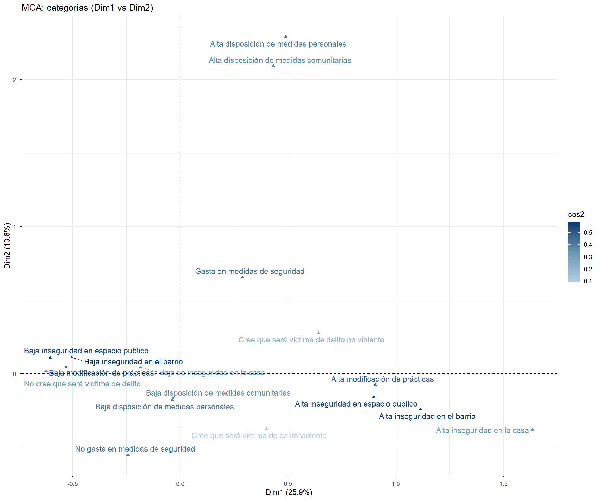
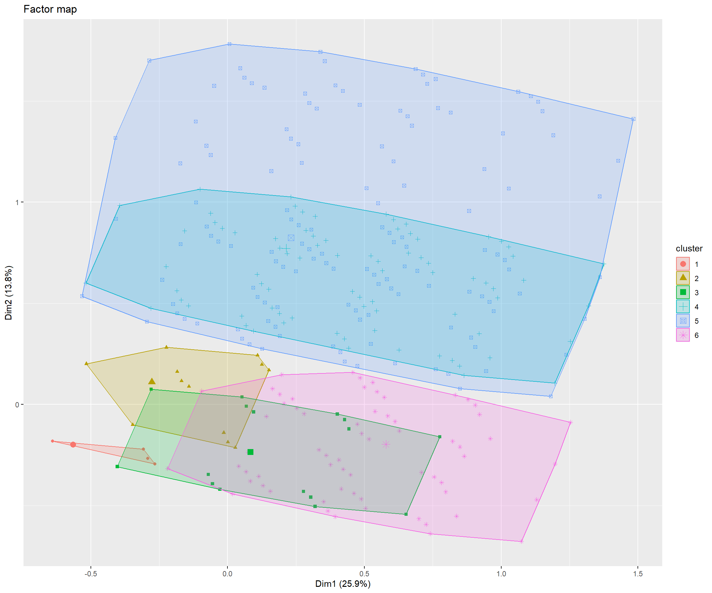
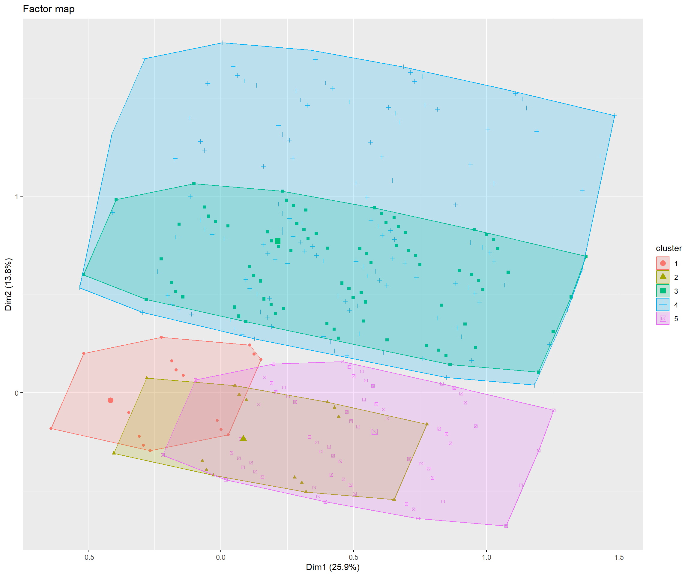
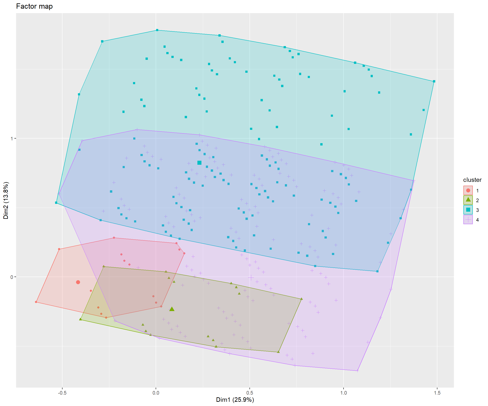
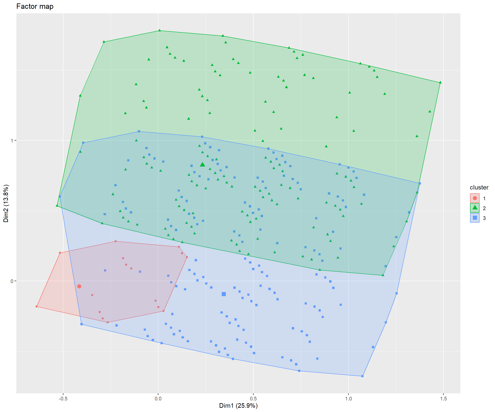
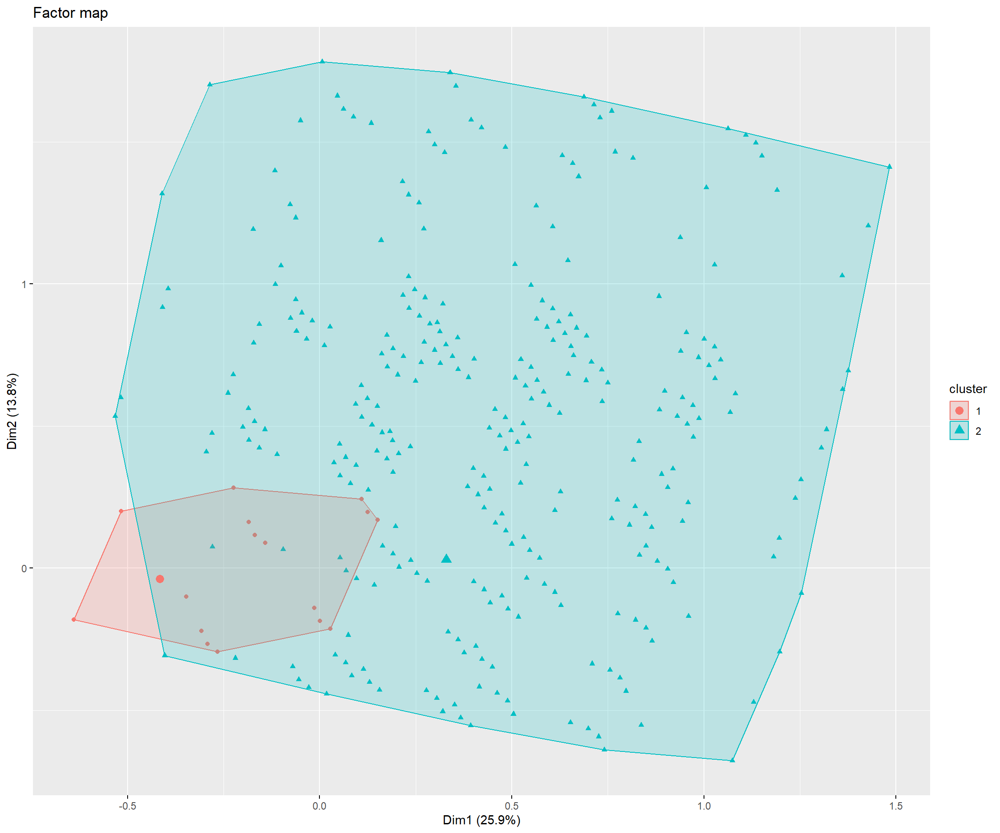

 Análisis MCA y HCPC ENUSC
Análisis MCA y HCPC ENUSC
Introducción
Este documento…
Tablas

El cluster 1 se caracteriza por una sobrerepresentación de: No gasta en medidas de seguridad (v_test = ); Baja modificación de prácticas (v_test = ) and No cree que será victima de delito (v_test = )
El cluster 2 se caracteriza por una sobrerepresentación de: Gasta en medidas de seguridad (v_test = ); Baja inseguridad en el barrio (v_test = ) and Baja inseguridad en espacio publico (v_test = )
El cluster 3 se caracteriza por una sobrerepresentación de: Cree que será victima de delito violento (v_test = ); Baja de inseguridad en la casa (v_test = 28.76) and Baja disposición de medidas comunitarias (v_test = 24.53)
El cluster 4 se caracteriza por una sobrerepresentación de: Alta disposición de medidas personales (v_test = ); Gasta en medidas de seguridad (v_test = 18.8) and Baja disposición de medidas comunitarias (v_test = 13.22)
El cluster 5 se caracteriza por una sobrerepresentación de: Alta disposición de medidas comunitarias (v_test = ); Gasta en medidas de seguridad (v_test = 18.17) and Alta disposición de medidas personales (v_test = 13.42)
El cluster 6 se caracteriza por una sobrerepresentación de: Alta modificación de prácticas (v_test = ); Cree que será victima de delito no violento (v_test = ) and Alta inseguridad en la casa (v_test = )

El cluster 1 se caracteriza por una sobrerepresentación de: Baja disposición de medidas comunitarias (v_test = ); Baja disposición de medidas personales (v_test = ) and Baja modificación de prácticas (v_test = )
El cluster 2 se caracteriza por una sobrerepresentación de: Cree que será victima de delito violento (v_test = ); Baja de inseguridad en la casa (v_test = 28.76) and Baja disposición de medidas comunitarias (v_test = 24.53)
El cluster 3 se caracteriza por una sobrerepresentación de: Alta disposición de medidas personales (v_test = ); Gasta en medidas de seguridad (v_test = 18.8) and Baja disposición de medidas comunitarias (v_test = 13.22)
El cluster 4 se caracteriza por una sobrerepresentación de: Alta disposición de medidas comunitarias (v_test = ); Gasta en medidas de seguridad (v_test = 18.17) and Alta disposición de medidas personales (v_test = 13.42)
El cluster 5 se caracteriza por una sobrerepresentación de: Alta modificación de prácticas (v_test = ); Cree que será victima de delito no violento (v_test = ) and Alta inseguridad en la casa (v_test = )

El cluster 1 se caracteriza por una sobrerepresentación de: Baja disposición de medidas comunitarias (v_test = ); Baja disposición de medidas personales (v_test = ) and Baja modificación de prácticas (v_test = )
El cluster 2 se caracteriza por una sobrerepresentación de: Cree que será victima de delito violento (v_test = ); Baja de inseguridad en la casa (v_test = 28.76) and Baja disposición de medidas comunitarias (v_test = 24.53)
El cluster 3 se caracteriza por una sobrerepresentación de: Alta disposición de medidas comunitarias (v_test = ); Gasta en medidas de seguridad (v_test = 18.17) and Alta disposición de medidas personales (v_test = 13.42)
El cluster 4 se caracteriza por una sobrerepresentación de: Alta disposición de medidas personales (v_test = ); Alta modificación de prácticas (v_test = ) and Cree que será victima de delito no violento (v_test = )

El cluster 1 se caracteriza por una sobrerepresentación de: Baja disposición de medidas comunitarias (v_test = ); Baja disposición de medidas personales (v_test = ) and Baja modificación de prácticas (v_test = )
El cluster 2 se caracteriza por una sobrerepresentación de: Alta disposición de medidas comunitarias (v_test = ); Gasta en medidas de seguridad (v_test = 18.17) and Alta disposición de medidas personales (v_test = 13.42)
El cluster 3 se caracteriza por una sobrerepresentación de: Baja disposición de medidas comunitarias (v_test = ); Alta modificación de prácticas (v_test = ) and Cree que será victima de delito violento (v_test = )

El cluster 1 se caracteriza por una sobrerepresentación de: Baja disposición de medidas comunitarias (v_test = ); Baja disposición de medidas personales (v_test = ) and Baja modificación de prácticas (v_test = )
El cluster 2 se caracteriza por una sobrerepresentación de: Alta disposición de medidas comunitarias (v_test = ); Alta disposición de medidas personales (v_test = ) and Alta modificación de prácticas (v_test = )